Jual Atap Lengkung di Bekasi ☎ ??? (www.dis.or.id)
Pernahkah anda melihat bangunan tanpa atap? Tentu pernah bukan? Bangunan tanpa atap hanyalah bangunan yang terbengkalai dan tidak diurus oleh pemiliknya. Atap adalah bagian penting sebuah bangunan yang fungsinya untuk menaungi sebuah bangunan. Salah satu atap yang paling laris di pasaran adalah atap yang terbuat dari galvalum. Selain atap, adapula rangka atap yang berfungsi sebagai penyangga atap. Berat atap yang saya maksud disini tidaklah seberapa, karena berat yang tertopang pada galvalum tersebut sudah tersalurkan dengan baik sehingga tidak akan membebani atap maupun galvalum. Bayangkan jika atap dipasang tanpa adanya kerangka dibawahnya.
Distributor & Supplier Atap Lengkung
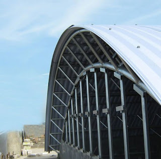
Salah satu bagian penting pada bangunan baik untuk rumah, kantor maupun toko adalah atap lengkung Bekasi. Ya, atap lengkung Bekasi sangatlah dibutuhkan untuk setiap bangunan yang dibangun oleh manusia.
Saat ini banyak sekali jenis atap dengan berbagai bahan dasar pembuatnya. Sehingga membuatnya tahan cuaca, bahkan ekstrim sekalipun. Seperti namanya, atap lengkung Bekasi adalah atap yang bentuknya melengkung sehingga membuat bangunan yang dinaunginya terlihat megah.
Penggunaan atap lengkung contohnya adalah pada pembuatan atap stadion. Bahkan tidak sedikit yang rela mengeluarkan gocek yang tidak sedikit mengingat harganya yang sedikit lebih mahal dibandingkan atap galvalum dengan model biasa. Atap dengan kualitas baik adalah atap lengkung Bekasi yang kuat menahannya derasnya iklim dan cuaca. Anda sudah berada di tempat yang tepat. dis.or.id adalah distributor terpercaya untuk anda. Maka anda sudah berada di tempat yang tepat.
Info Pemesanan Selengkapnya
Google Maps: https://www.google.com/maps/d/u/0/viewer?mid=1jTQUf9ULWdUIa8iDLwabVtcOdrQf8Eme&ll=-7.272623401464149%2C112.6482284&z=17
Note: https://www.facebook.com/notes/distributor-of-industrial-supply/pabrik-supplier-atap-lengkung/1782710675362145/
Event: https://www.facebook.com/events/137280070316926/
Portfolio Produk: https://www.facebook.com/pg/DistributorOfIndustrialSupplyDIS/photos/?tab=album&album_id=1683772021922678
Distributor & Supplier Besi Beton
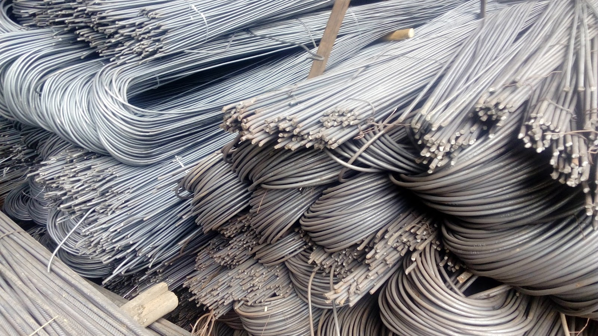
Beragam jenis beton tersebut bisa diaplikasikan untuk berbagai kebutuhan pembangunan. Besi beton sendiri adalah material yang biasa digunakan dalam konstruksi dengan kekuatan yang sangat besar serta tahan terhadap berbagai guncangan dan tekanan. Berbagai macam tipe tersebut bisa Anda gunakan untuk pembangunan. Dan besi beton polos memiliki penampakan benda dengan permukaan licin atau tidak bersirip.
Besi beton polos sangat jarang digunakan kecuali digunakan sebagai kolom.
Jika anda saat ini sedang membutuhkan besi beton berkualitas tinggi. Di sana anda akan mendapatkan berbagai macam jenis serta ukuran dari besi beton dengan harga yang cukup terjangkau dan mutu yang sangat terjamin. Kualitas dan mutunya pun telah terjamin.
Distributor & Supplier Steel Grating
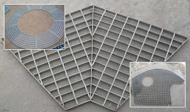
Plat Grating merupakan suatu jenis plat besi yang terbuat dari rangkaian semisal sekrup besi dan plat jalur. Plat Grating tersebut dibuat dari jenis baja dengan kualitas yang tinggi kemudian dilas antara satu dengan yang lain. Secara umum, produk ini digunakan dalam kontruksi lantai, kemudian deck, anak tangga pada bangunan pabrik kemudian, tambang minyak dan sejumlah bangunan industri lain nya. Tentunya dengan berbagai model dan tipe yang beragam. Grating ini bisa dirangkai plat strip besi baja dan besi ulir yang dilas pada permukaan silangnya sehingga akan membuat bangunan lebih kokoh dan kuat.
Kini anda bisa mendapatkan steel grating dengan harga yang sangat murah namun tetap memiliki kualitas dan mutu yang terbaik dengan mengunjungi dis.or.id. Karena disana anda bisa mendapatkan steel grating yang berkualitas dan harga yang ditawarkan pun sangat terjangkau dan pastinya cocok untuk kantong anda. Memesan steel grating di dis.or.id pastinya anda tidak akan merasa rugi.
Distributor & Supplier Pipa (Hitam/Gas, Galvanis)
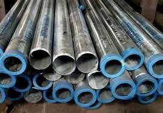
Kekuatan dari pipa hitam gas ini memang sangat kuat, tak heran bila untuk kebutuhan konstruksi bangunan yang berat material ini tidak pernah absen. Pipa hitam banyak sekali diaplikasikan pada area pertambangan minyak gas karena ia memiliki struktur yang 3 kali lebih kuat dari jenis pipa biasa. Terlihat dari namanya saja, pipa hitam ini memang dibuat khusus untuk kebutuhan pertambangan minyak gas, untuk itu nama lain dari pipa hitam adalah pipa gas. Karena telah terlapis dengan material stainless steel pipa ini jadi tahan karat dan korosi, sehingga dapat anda aplikasikan untuk segala kondisi cuaca di Indonesia. Ukuran pipa besi hitam terkecil adalah ½ inci, dan paling besar 40 inci. Anda dapat segera menghubungi kami untuk informasi lebih detail mengenai pemesanan pipa hitam.
Distributor & Supplier Kawat Bronjong/Gabion

Kawat bronjong sering dianggap sebagai pencegah erosi. Hal ini disebabkan kawat ini dilapisi dengan galvanis. Selain itu, sebenarnya kawat bronjong ini juga bisa dikatakan sebagai pemerkuat bukit. Ini mencegah longsor yang mengakibatkan bangunan atau jalan yang berada di atas tebing mengalami kerusakan ketika tanahnya mengalami erosi. Anda bisa lihat tumpukan bebatuan di pinggir pantai yang dirantai dengan kawat bronjong. Tujuannya agar tidak mudah tergerus ketika adanya arus air.
Disana anda bisa mendapatka kawat dengan harga yang cukup terjangkau dengan kualitas terbaik yang dimilikinya. Sehhingga, anda bisa leluasa memilih kawat bronjong mana yang susuai dengan yang anda butuhkan.
Distributor & Supplier WF H-beam
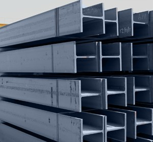
Saat ini, banyak orang yang ingin mencari jenis besi WF, terlebih ini zaman yang serba modern dan praktis. Kekuatan yang dimiliki oleh besi ini memang terbukti kuat dan sangat tinggi. Sungguh mudah bukan?
Kini anda bisa mendapatkan besi WF H-beam dengan sangat mudah, caranya anda bisa langsung saja datang ke dis.or.id. Harga yang di patok juga sangat terjangakau, jadi anda tidak perlu mengeluarkan budget terlalu banyak. Disana anda bisa mendapatkan besi wf yang anda inginkan.
Distributor & Supplier Expanded Metal
.jpg)
Expanded metal atau yang biasa dikenal dengan sebutan X.P.M. ini merupakan salah satu produk hasil dari kemajuan teknologi saat ini. Expanded Metal memiliki keunggulan dibandingkan dengan yang lain dari sisi kekuatannya yang cukup bagus serta biasa digunakan sebagai instalasi pagar, lantai, ataupun dinding.
Jika anda saat ini sedang mencari dan membutuhkan expanded metal, ada baiknya anda mengunjungi dis.or.id. Disana terdapat berbagai informasi mengenai expanded metal yang anda butuhkan.
Distributor & Supplier Plat (Hitam, Kapal, Bordes, Strip)
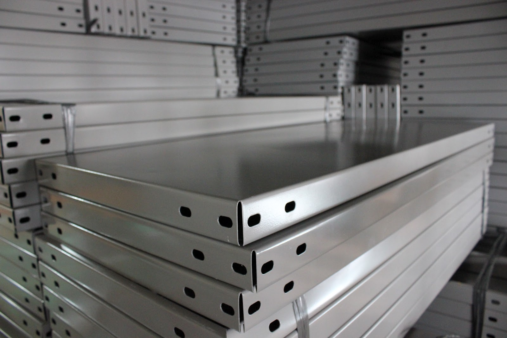
Dis.or.id menjual plat besi yang anda butuhkan dengan harga yang murah.
Dengan mengunjungi situs tersebut, anda bisa mengetahui secara detail segala jenis plat yang mungkin sedang anda butuhkan. Tak perlu khawatir harga, karena harga yang di patok pastinya sangat murah dan terjangkau.
Distributor & Supplier Floor Deck (Bondex)

Biasa di gunakan sebagai alas dalam proses pembuatan lantai dan atap dak beton. Floor deck merupakan material yang tahan terhadapa api di bandingkan dengan material kayu lainnya. Selain itu, Floor Deck ini bisa dipasang pada konstruksi baja ataupun beton serta didukung dengan data perencanaan. Maka dari itu tidak mengherankan jika saat ini banyak yang lebih memilih menggunakan Floor Deck ini.
Floor deck berkualitas tinggi bisa anda dapatkan dengan mudah yaitu mengunjungi situs dis.or.id. Disana anda bisa mendapatkan floor deck yang anda inginkan.
Distributor & Supplier Atap Galvalum
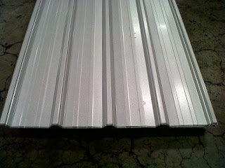
Dengan semakin panasnya bumi, maka di ruangan pun masih terasa suhu panas. Apalagi bila ruangan tersebut tidak dilengkapi pendingin ruangan.
Banyak sekali kelebihan yang dimiliki oleh atap galvalum ini. Galvalum mempunyai berbagai ukuran yang sesuai dengan kebutuhan.
Bahkan, setiap rumah khususnya di perumahan sudah banyak yang menggunakan atap galvalum sebagai teras khusus ntuk mobilnya. Harus diakui bahwa atap seng yang digunakan dapat menyebabkan rumah terasa panas. Ini dikarenakan seng menyebabkan rumah anda menjadi terasa panas. Karena galvalum mempunyai daya tahan karat 4x dari galvanis. Jenisnya yang beragam dan banyak ukuran yang dapat disesuaikan mampu memenuhi kebutuhan anda. Perbedaan ukurannya terletak pada panjang, lebar dan tebalnya.
Distributor & Supplier Truss Canal C
Sebagai informasi untuk anda, bahwa besi kanal C ini di kalangan para pekerja bangunan juga kenal dengan nama Besi CNP. Jadi ketika anda mendengan istilah CNP, diharapkan anda tidak bingung atau merasa rancu lagi, karena pada dasar nya sama. Dengan penggabungan galvalum dengan besi kanal c maka sebuah bangunan bisa menjadi lebih kuat dan berkualitas. Cara pemasangannya besi kanal c dengan reng galvalum juga tidak boleh sembarangan. Besi kanal C ini selain digunakan untuk konstruksi bangunan dalam pembuatan atap, juga bisa juga dan banyak juga yang menggunakan nya sebagai bahan otomotif, seperti kerangka mobil, sepedamotor dan onderdil lain nya. Jadi dengan kata lain, besi kanal C ini bisa dikatakan multi fungsi. Bagi anda yang sedang mencari besi kanal C maka saya merekomendasikan anda untuk mengujungi dis.or.id.
Distributor & Supplier Hollow Galvalum

Penggunaan besi ini sebagai rangka atap rumah sudah mulai banyak digunakan dalam beberapa tahun terakhir ini. Namun dominasi bahan sebagian besar menggunakan alumunium dengan presetase rata rata 55%.
Selain dinilai lebih kuat, ternyata juga lebih ekonomis. Tunggu apa lagi, silahkan hubungi customer service kami untuk melakukan pemesanan hollow galvalume. Kami akan mengirim barang pesanan anda sampai pada tujuan dengan aman, cepat dan tepat tujuan.
Distributor & Supplier Seng Gelombang
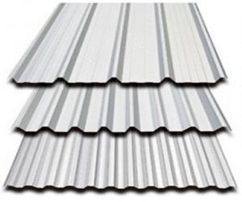
Seng gelombang dijual dengan harga yang relatif murah dibanding genteng, hal inilah yang menjadi daya tarik besar penggunaannya. Ia lebih mudah di pasang dan harga jual yang ekonomis dipasaran membuat seng gelombang memiliki banyak peminat. Seng gelombang adalah salah satu solusi yang kami rekomendasikan untuk anda. Tak heran jika seng gelombang melengkapi fiturnya dengan menyediakan beragam ukuran seng gelombang menurut standar SNI. Pemasangan seng pada atap rumah haruslah dibantu dengan kerangka kayu, atau bisa juga anda memanfaatkan kerangka galvalum yang kini sudah bermunculan di masyarakat dan lebih unggul di banding kerangka kayu sendiri.
Seng gelombang sekarang ini diburu banyak masyarakat untuk menutup bagian atap bangunan mereka. Meskipun mahal, namun kami yakin bahwa anda tidak akan menyesal dengan berbagai jenis seng gelombang yang tersedia.
Distributor & Supplier Plat Seng
![seng gelombang standar</a>” width=”500px”/></p><p>Plat galvanis ini kebanyakan dijual secara lembaran, dan ada juga yang menjual nya per meter.<br /> Dan apabila anda merasa kurang paham tentang ukuran yang mana yang sesuai dengan kebutuhan anda, anda dapat mengkonsultasikan nya dengan kami secara gratis. Hal hal tersebut memang menjadi ciri khas dari seng biasa pada umumnya. Harga plat galvanis lembaran tentu nya akan lebih mahal jika dibandingkan yang per meter.</p><p>Disana banyak sekali info yang sangat berguna untuk anda yang sedang mencari plat seng & plat galvalum sesuai kebutuhan anda. </p><h3>Distributor & Supplier Genteng Metal</h3><p><img src=](../4.bp.blogspot.com/-lGfz8SZWk4s/WNh0Q93hroI/AAAAAAAAAUk/TUr4mX0CVQcoYhFcJOdErSO8Ep8Lo4IxwCLcB/s320/IMG_7468.JPG)
Penggunaan zincalume memang memberikan keuntungan khusus yang tidak akan anda temukan di genteng keramik pada umumnya. Berbicara tentang genteng metal memang akan identik dengan perbandingan metal vs keramik. Genteng metal adalah genteng yang terbuat dari campuran dari bahan bahan yang terbuat dari logam, seperti zinc, baja ringan dan galvanis. Memang saran terbaik ketika anda ingin menggunakan atap dari genteng metal adalah gunakan jenis genteng metal pasir terbaik. Memang saran terbaik ketika anda ingin menggunakan atap dari genteng metal adalah gunakan jenis genteng metal pasir terbaik. Warnanya pun beragam sehingga akan membuat rumah maupun bangunan yang dinaunginya menjadi terlihat lebih modern dan berbeda dibandingkan dengan rumah-rumah lain di sebelahnya.
Karena kepuasan dan kepercayaan pelanggan adalah segalanya bagi kami. Bila belum percaya, maka anda dapat mengujungi situs official kami di dis.or.id untuk mendapatkan info yang lebih lanjut dan dapatkan penawaran terbaik dari kami khusus untuk anda.
Distributor & Supplier Besi Wiremesh
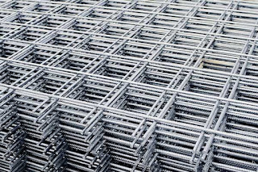
Jika anda membutuhkan besi lonjor yang membentuk anyaman anda dapat membeli jenis besi wiremesh pada kami. Untuk kepentingan konstruksi, besi wiremesh diaplikasikan untuk keperluan anak tangga, plat lantai, dan penguat dak beton. Tentu saja, tidak semua kebutuhan besi wiremesh bisa menggunakan jenis yang sama. Besi wiremesh dengan ketebalan 8 sampai 10 digunakan untuk bangunan bertingkat. Sedangkan untuk kebutuhan bangunan biasa menggunakan jenis wiremesh ukuran 4 sampai 6 sudah cukup kuat. Jika anda saat ini membutuhkan besi wiremesh dengan kualitas terbaik, segera kunjungi dis.or.id.
Distributor & Supplier Pagar BRC

Pagar BRC (British Reinforced Concrete) adalah pagar yang terbuat dari besi beton dengan diameter 5mm – 8mm dimana ketebalannya tergantung dengan ketinggian pagar. Pemanfaatan pagar BRC sendiri tergolong sebagai pagar minimalis yang siap digunakan untuk melindungi sebuah bangunan. Apalagi mengingat kekuatan pagar BRC tidak dapat diragukan lagi, karena pagar ini diproduksi dengan baja bertegangan tinggi U55 grade dengan tegangan ijin 2900kg/cm2 sekitar 2. Pagar BRC juga tahan karat karena lapisan besi telah terlindungi dengan galvanis. Pagar BRC memiliki daya tahan sampai > 10 tahun karena ia tergolong besi yang tahan karat karena sudah terlapisi dengan lapisan galvanis. Bagi anda yang membutuhkan pagar BRC anda dapat menghubungi kami untuk informasi pemesanan.
Distributor & Supplier Kawat Loket, Kawat Harmonika

Apakah anda membutuhkan kawat untuk penyekat? Kawat pagar? Penutup jendela? Atau kebutuhan lainnya? Untuk kebutuhan seperti ini anda bisa gunakan kawat loket harmonika yang memiliki bentuk seperti anyaman dan kuat. Kawat loket harmonika ini telah dimanfaatkan untuk berbagai keperluan, baik industri, konstruksi, rumahan, dan sebagainya. Jika dilihat dalam kehidupan sehari-hari kawat harmonika banyak diaplikasikan untuk kebutuhan industri, konstruksi, rumahan, dan lainnya. Anda dapat memesan kawat loket harmonika yang terlapis dengan galvanis untuk kualitas terbaik yang tahan korosi. Untuk informasi selengkapnya, anda dapat menghubungi kami, terlah tersedia kawat loket harmonika dengan diameter 1,5 mm – 4 mm, disertai lubang 20 mm sampai 70 mm tergantung dengan kebutuhan anda. Kami dapat menerima segala kebutuhan kawat harmonika anda dengan maksimal ukuran lebar sampai 3 meter.
Distributor & Supplier CNP & UNP
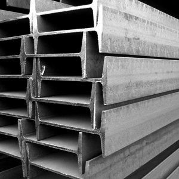
Selain sebagai sambungan, besi kanal UNP ini juga cocok dimanfaatkan untuk keperluan girts dan penutup sebuah dinding. Apabila anda amati sekali lagi, sebenarnya pemanfaatan dari besi UNP hampir mirip dengan WF, tapi karena besi UNP memiliki bentuk yang melengkung masih jarang orang yang memanfaatkan material ini untuk keperluan kolom bangunan. Membahas mengenai besi UNP pasti terasa kurang jika tidak membahas kembarannya pula, besi CNP. Untuk bentuknya sendiri besi CNP memiliki bentuk yang melengkung dan membentuk huruf C, untuk itulah kenapa banyak orang yang menyebutnya sebagai besi profil C. Pemanfaatannya bahkan bisa untuk keperluan otomotif.
Distributor & Supplier Besi Siku
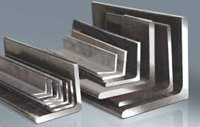
Setiap konstruksi bangunan pasti menggunakan material konstruksi besi siku ini untuk kebutuhan bagunan. Dengan bentuk kedua sisinya yang tegak lurus, anda bisa manfaatkan besi ini untuk keperluan rumah tangga ataupun furniture. Jika anda membutuhkan besi siku ini, segera hubungi kami! Kami menjual besi siku yang kokoh dan tahan lama. Dengan kualitas terbaik, anda bisa manfaatkan besi siku dari perusahaan kami untuk keperluan industri, otomotif, konstruksi, maupun furnitur. Butuh informasi lebih lengkap lagi? Kunjungi saja situs resmi kami di www.dis.or.id
Distributor & Supplier Hollow (Hitam, Galvanil, Galvanis)

Sekarang ini besi hollow pemanfaatannya sudah melebihi kayu, meskipun terbuat dari besi kualitasnya pun tidak dapat diragukan lagi.Sekarang sudah banyak orang yang beralih pemanfaatan dari kayu menjadi menggunakan besi hollow.Banyak orang yang mulai beralih dari pemanfaatannya yang menggunakan kayu beralih pada hollow hitam galvanil.Besi hollow saat ini menjadi material pengganti kayu yang sangat baik. Apalagi jika mengingat menggunakan besi hollow akan membuat pengerjaan konstruksi selesai lebih cepat. Tentu saja hal ini karena kelebihan yang ditawarkan oleh besi hollow sendiri tidak dimiliki kayu, material yang kokoh, pengerjaan cepat, dan tidak mudah rapuh. Tentu saja hal ini dikarenakan kekuatan yang dimiliki hollow galvanis tidak bisa dibandingkan dengan kayu, material ini juga lebih mempercepat pembangunan konstruksi. Besi hollow memiliki kekuatan yang lebih kokoh dan dapat mempercepat pekerjaan konstruksi karena strukturnya yang mudah diatur. Dis.or.id pun telah menyediakan produk besi hollow hitam galvanis ini untuk dapat anda pesan langsung! Tersedia ukuran besi hollow 40 x 40 x 2 mm x 6 Meter, 50 x 50 x 3 mm x 6 Meter hingga ukuran 150 x 150 x 5 mm x 6 meter dan masih banyak lagi. Anda bisa menghubungi kontak yang telah tersedia untuk informasi produk lebih detail. Jika anda membutuhkan besi hollow maka sebelum memesan pada kami anda harus melakukan perhitungan kebutuhan dahulu, seperti berapa panjang dan ketebalan yang diperlukan.
Distributor & Supplier Pipa Pancang
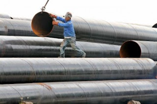
Sedangkan dari namanya saja tetu sudah sangat familiar dengan konstruksi yang satu ini. Jika mengenal fungsinya yang memang sangat bermanfaat, apalagi bagi pembangunan di atas permukaan laut, pasti membuatnya lebih di kenal lagi. Nah, pipa ini sendiri memiliki berbagai ukuran maupun spesifikasi lainnya. Jika saat ini Anda salah satu yang membutuhkan pipa pancang, tidak perlu khawatir karena pipa ini akan di dapatkan dengan sangat mudah. Selanjutnya, bagi Anda yang ingin mendapatkannya, jangan khawatir karena saat ini banyak sekali distributor penawar pipa pancang. Sedangkan untuk kualitas pipa pun akan sangat terjamin dengan mutu terbaik. Terlebih jika mengingat berbagai kelebihan dan fungsi nya yang bisa di terapkan di mana-mana.
Jasa Pondasi Bor (Strouss/Borepile)

Selanjutnya, dalam setiap pembangunan, pengeboran pondasi tentu saja adalah salah satu hal penting yang harus di perhatikan. oleh karena itu, jika Anda ingin menggunakan jasa pengeboran, tidak dapat di pungkiri lagi bahwa hal itu akan sangat membantu sebagai solusi. Bahkan di Indonesia ini pun juga telah tersebar di mana-mana. untuk kualitasnya pun tidak perlu di pertanyakan lagi karena dengan jasa profesional yang lebih berpengalaman ini, pengeboran akan semakin terjamin. Berbicara lebih dalam tentang pengeboran, tersedia dua jenis yang bisa Anda pilih. Namun bisa lebih mengurangi gangguan karena tidak menimbulkan getaran. Nah, jika tidak ingin menggunakan jasa bor, maka Anda bisa memiliki mesinnya sendiri. Sedangkan untuk hasil pengeboran manual maupun yang otomatis atau menggunakan mesin, secara umum sama-sama bagusnya.
Distributor & Supplier Genset (New/Second)
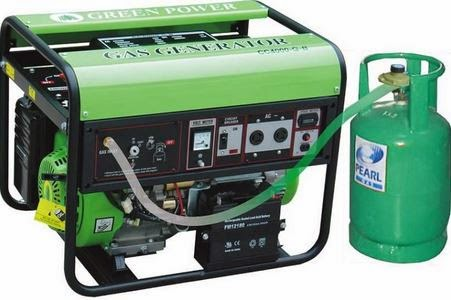
Sebagai penghasil tenagan listrik kini genset sudah banyak di kenal dan di aplikasikan. Apalagi manfaatnya yang bisa menghasilkan tenaga listrik. Sedangkan untuk pembelian, memang ada genset yang masih dalam kondisi baru mapun genset yang sudah bekas atau second. Nah, untuk pembelian keduanya, bisa Anda dapatkan pula di DIS.
Dalam masalah harga, tentu saja memang genset di jual dengan cukup mahal. Akan tetapi, meski bekas, jangan khawatir karena kualitasnya masih cukup baik dan hampir menyamai genset yang baru. sedangkan dari segi merk, genset sendiri juga cukup variatif. untuk merk nya pun, genset juga variatif.
Distributor & Supplier UPS
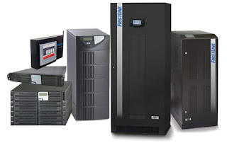
Kalau menyebut UPS, mungkin akan banyak yang bertanya-tanya sebenarnya apa sih barang yang satu ini. Hanya saja, yang tidak mengetahui nya pu juga cukup banyak. Sebenarnya bisa di akui bahwa memiliki nya sangatlah penting. Sejauh ini tentu saja akan sangat penting memiliki UPS terutama bagi pengguna komputer. Bukan hanya kualitas spesifikasi yang berbeda, akan tetapi juga kapasitas listrik yang bisa di simpan. Karenanya, ketika Anda membeli UPS ini, sebaiknya memastikan terlebih dahulu seberapa besar kapasitas yang Anda butuhkan. mengingat akan hal tersebut, maka Anda bisa memilih yang paling pas untuk pembeliannya.
Distributor & Supplier Forklift (Second)
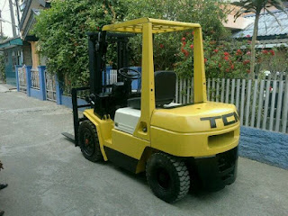
oleh karena itu penjualan forklif pun banyak di mana-mana termasuk di sini. karena itu pula, penjualan forklif sendiri banyak di temukan di mana-mana. Sedangkan dalam pembeliannya, bisa memilih baik yang baru ataupun yang bekas. Dengan bahan yang terjamin tersebut, tentu saja tujuan penggunaan forklif ini akan semakin memudahkan setiap aktifitas di industri Anda. Nah, mengingat kualitasnya yang terjamin, maka akan semakin memudahkan berbagi aktifitas industri pengguna nya. Apalagi, di sini yang di tawarkan adalah forklif yang siap pakai. Selanjutnya, jika forklif sudah tidak di gunakan, Anda pun bisa kembali menjualnya pada setiap distributor forklif sehingga tidak akan rugi membelinya.
Jasa Pembuatan Moulding Inject

solusi tersebut adalah dengan memilih jasa pembuatan moulding inject seperti yang di tawarkan DIS. Bahkan ketika Anda bingung ide, ada banyak pilihan yang bisa di gunakan dan di sesuaikan dengan kebutuhan. Apalagi jika Anda kebingungan masalah ide, jangan khawatir karena banyak pilihan yang bisa di jadikan inspirasi. Anda pun bisa memilih kira-kira ide seperti apa yang paling pas untuk produk Anda sehingga pembuatannya bisa tepat sasaran. Dengan demikian pencetakan plastik ini bisa tepat sasaran.
Jasa Pembuatan Sparepart Mesin Produksi / Alat Berat
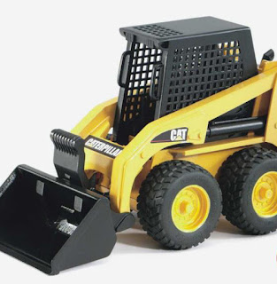
Dalam setiap proyek pembangunan, adanya alat berat atau sparepart tentu bukanlah hal yang asing pula. Bukan hanya dalam penggunaannya, akan tetapi juga pembuatannya. Oleh karena itu, silahkan menggunakan jasa terpercaya yang di sediakan di sini sehingga akan memiliki hasil yang terjamin. Dengan demikian hasilnya pun akan lebih terjamin dan aman. Pembuatan alat berat ini memang tidak bisa sembarangan, bisa jadi ketikan di buat dengan sembarangan dan ada kesalahan yang cukup fatal, akan membahayakan bagi para pekerja. Oleh karena itulah di butuhkan hasil berkualitas sehingga bisa bekerja secara maksimal. Hal inilah yang membuatnya harus di produksi oleh jasa terpercaya sehingga akan semakin aman. Semakin baik spesifikasi nya, tentu akan semakin mahal.
Jasa Service Elektronik (Kompor Gas, Dispenser, Mesin Cuci)

Dengan semakin berkembanganya zaman, penggunaan elektro juga semakin banyak. Jika Anda bingung di mana memperbaiki barang tersebut, bisa saja langsung merujuk pada salah satu jasa yang di tawarkan DIS. Sedangkan untuk masalah kualitas yang di tawarkan DIS, jangan khawatir karena tingkat keamanan dan perbaikannya sangat tinggi dna terjamin. Nah, kalau masalah servicenya sendiri sebenarnya Anda bisa juga melakukannya pada barang-barang yang harus di cek saja sekalipun tidak ada keluhan secara spesifik. Selain untuk perbaikan, Anda pun bisa juga hanya melakukan pengecekan tanpa keluhan sebagaimana service pada umumnya.
Nah, apakah anda sudah mengerti betapa pentingnya atap untuk keperluan setiap pembangunan? Tentu sangat penting bukan? Atap sangat dibutuhkan dalam setiap pembangunan sehingga membuatnya sering dicari. Dari yang modern sampai konvensional atap selalu ada di setiap bangunan. Ada pula bangunan yang tak beratap dan hanya menjadi pondasi. Kebutuhan primer seperti atap, memang tidak dapat diragukan lagi fungsinya. Bila anda berkenan, maka anda dapat mengujungi situs utama kami dis.or.id. Jangan lupa untuk mengujungi official site kami dis.or.id dan dapatkan info & penawaran menarik seputar atap dan masih banyak lagi bahan bangunan yang lain.